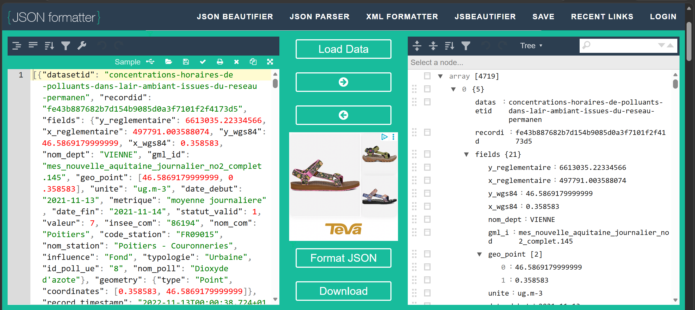
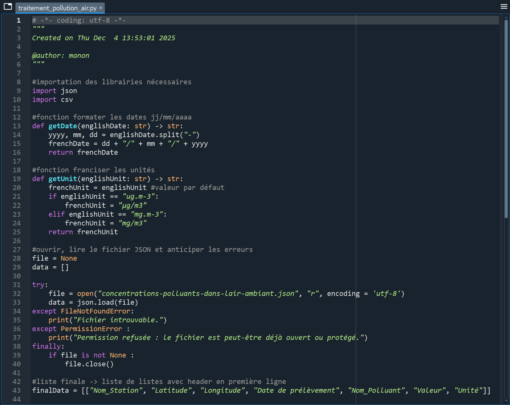
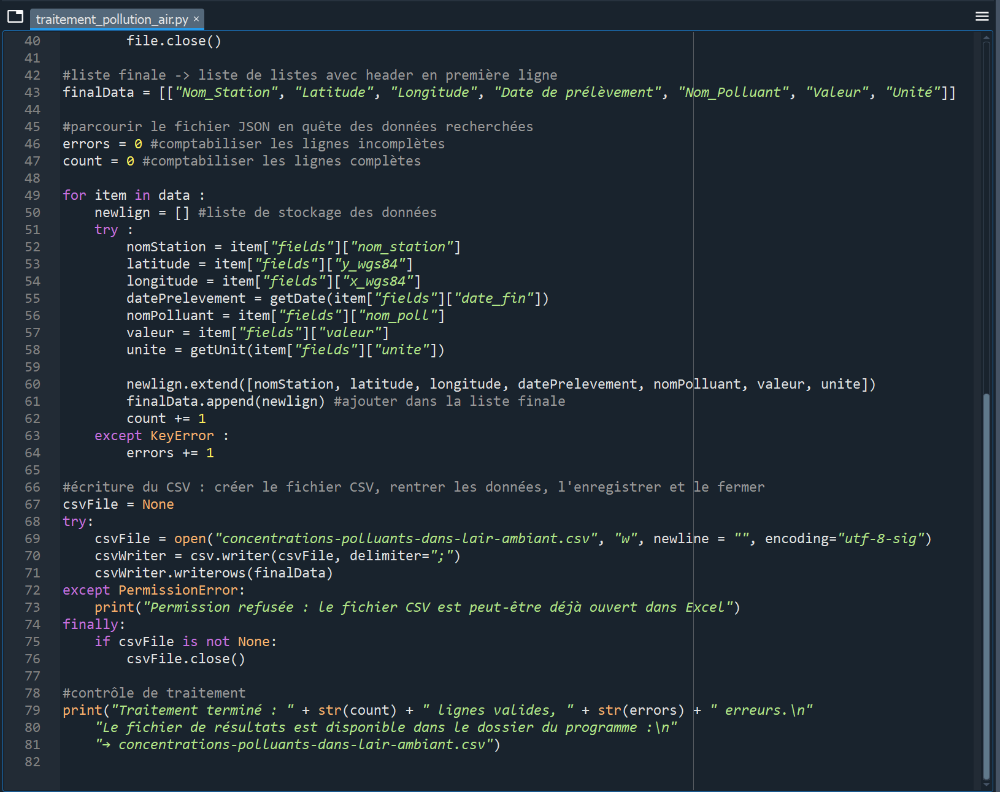
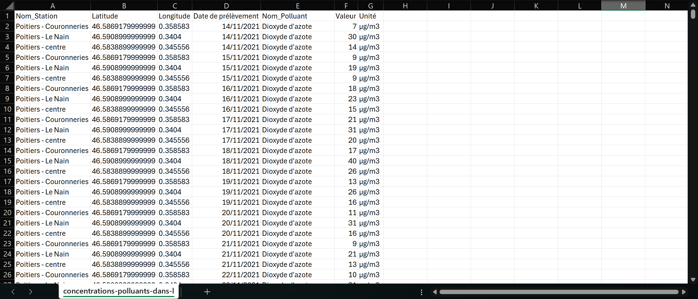

Transformation JSON → CSV de données environnementales en Python
Développement d'un script Python pour transformer un fichier JSON de concentrations de polluants dans l'air à Poitiers en un fichier CSV structuré et exploitable. Mes premiers pas en programmation, réalisé seule par choix.
Année
2025 – 2026 (S1)
Date de rendu
Déc. 2025
Cadre
Travail individuel
Livrable
Script Python commenté
Outils
SAÉ
Écriture et lecture de fichiers de données
L'objectif était de transformer un fichier JSON contenant les concentrations moyennes horaires de polluants dans l'air ambiant à Poitiers en un fichier CSV structuré et exploitable dans Excel. Le jeu de données, issu du réseau fixe des mesures européennes, contenait les relevés de huit polluants réglementés sur 4 719 enregistrements. Le CSV de sortie devait ne conserver que les colonnes utiles et exclure toutes les lignes incomplètes.
Travail individuel. Script Python commenté à rendre sur Updago avant le 7 décembre 2025. Évaluation portant sur l'opérationnalité du script, l'optimisation, les bonnes pratiques de programmation et l'ergonomie.
Utilisation de JSON Formatter pour visualiser la structure arborescente : un tableau de 4 719 enregistrements, chacun contenant un sous-dictionnaire « fields » avec 21 champs. Cette analyse préalable a été déterminante pour naviguer dans la structure imbriquée.
Chargement en mémoire via json.load() avec encodage UTF-8. Bloc try/except/finally pour anticiper les erreurs (FileNotFoundError, PermissionError) et garantir la fermeture du fichier dans tous les cas.
Parcours des enregistrements pour extraire les 7 champs demandés depuis le sous-dictionnaire « fields ». Gestion des clés absentes via try/except KeyError : les lignes incomplètes sont écartées et comptabilisées.
Écriture avec séparateur point-virgule et encodage utf-8-sig pour la compatibilité Excel. Ajout d'un message de contrôle en console indiquant le nombre de lignes traitées.
Création de getDate() pour convertir les dates du format anglais vers le français, et getUnit() pour transformer les unités scientifiques brutes (« ug.m-3 ») en notation lisible (« μg/m³ »). Initiatives personnelles pour améliorer la qualité du livrable.




Apprentissages critiques
Ressources mobilisées
Compétences techniques
Cette SAÉ a été la plus difficile pour moi. Avant d'intégrer la formation, je n'avais jamais écrit une seule ligne de code Python. Je me suis retrouvée seule face à un écran noir, sans savoir par où commencer. Je ne maîtrisais pas les structures de base : je ne savais même pas comment parcourir un dictionnaire Python, et la perspective de naviguer dans une structure JSON aussi imbriquée me semblait insurmontable au départ.
J'ai fait le choix délibéré de réaliser ce projet seule, sans binôme, pour me forcer à comprendre par moi-même. Mon mot d'ordre était clair : je voulais être capable d'expliquer chaque ligne de mon code. J'ai sollicité de l'aide auprès de mes camarades, non pas pour qu'ils fassent le travail à ma place, mais pour qu'ils m'expliquent les concepts que je ne comprenais pas. Même si mes choix de codage ne sont pas forcément les plus élégants, chaque ligne est le fruit de ma propre réflexion et je suis en mesure de justifier chaque décision technique.
Au-delà de l'apprentissage du langage, plusieurs points techniques m'ont posé problème : comprendre la structure imbriquée du JSON (un tableau de dictionnaires contenant eux-mêmes des dictionnaires), gérer l'encodage UTF-8 pour que les accents s'affichent correctement dans Excel, et anticiper tous les cas d'erreur possibles (fichier absent, clé manquante, permission refusée). Chacun de ces obstacles a nécessité des recherches et de nombreux essais avant de trouver la bonne solution.
Cette SAÉ m'a permis de faire mes premiers pas concrets en programmation Python. J'ai appris à développer un script complet d'automatisation de traitement de données : lire un fichier JSON, naviguer dans une structure de données imbriquée, transformer et filtrer les enregistrements, et produire un fichier CSV propre et exploitable pour l'analyse statistique. J'ai également découvert l'importance de la gestion des erreurs (try/except) et de l'encodage des caractères, deux aspects rarement visibles mais essentiels dans le traitement de données réelles.
Au-delà de la syntaxe Python, j'ai développé une véritable logique algorithmique : décomposer un problème complexe en étapes successives, anticiper les cas limites, structurer un programme avec des fonctions réutilisables. J'ai aussi pris conscience de l'importance des bonnes pratiques de programmation – commenter son code, le rendre lisible et maintenable – qui ne sont pas du temps perdu mais un investissement pour soi-même et pour les autres.
Avec le recul, je me rendrais plus rapidement sur les outils de visualisation JSON pour comprendre la structure du fichier avant de coder. Cette étape d'exploration m'aurait fait gagner du temps si je l'avais systématisée dès le début. J'aurais aussi pu découper mon script en davantage de fonctions dès le départ pour le rendre encore plus modulaire. Mais surtout, cette SAÉ m'a montré que partir de zéro n'est pas un obstacle quand on s'engage à comprendre ce que l'on fait – c'est même la meilleure façon d'apprendre.